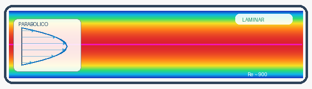
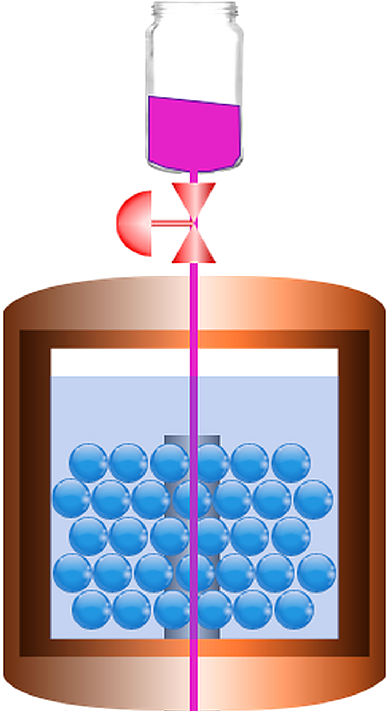
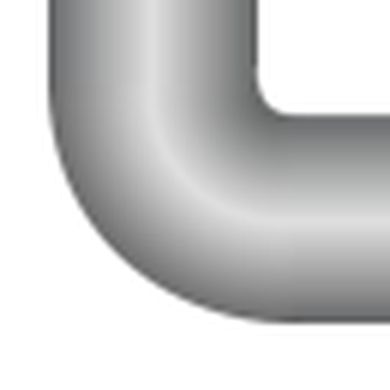
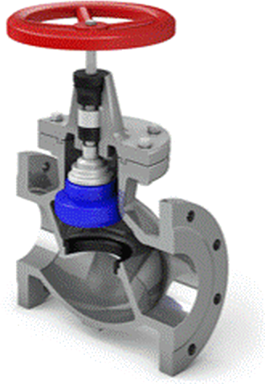

Laboratorio de Fluidos: FLUJO LAMINAR Y TURBULENTO
Mesa de ensayo
Equipo listo
Visualización del coloranteHilo recto y estable




0,00 L1,000,750,500,250
•••
00,00
TIEMPO DE RECOLECCIÓN · sEl colorante permanece ordenado a bajo caudal y se mezcla cuando dominan las fuerzas inerciales.Re = V̄·D / ν